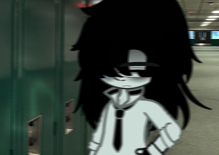

Antes de mais nada, o nome do cidadão é Miskko. Sim, com dois Ks, porque aparentemente um só não era suficiente pra causar vergonha. A diferença mais nítida que se vê entre eu e ele é a de que ele é um homem, e eu não.
Qual é, cara? Eu fui tirada até a alma por me chamar Miska, mas aí vem esse ser humano chamado MISKKO e tá tudo bem? Ninguém vai rir? Ninguém vai pelo menos dizer que “parece nome de energético genérico”? É, os de verdade eu sei quem são.
Mas tá, foda-se!
Você já sabe o rolê: o cara entra, a plateia grita, aplausos, confete, purpurina, “uau, que presença!”. Blá blá blá e é isso aí!
Agora, talvez você esteja se perguntando: “Mas Miska, por que você tá tão irritada assim?”
E eu te respondo com toda calma e serenidade que me restam (ou quase): porque esse energúmeno não falou UMA palavra. Quarenta minutos de silêncio absoluto, me olhando com a mesma expressão de quem tá tentando lembrar se desligou o fogão.
“Ah, mas por que você não puxa assunto?”
EU JÁ TENTEI! Perguntei, comentei o clima, até falei de astrologia (o auge do desespero), e o cara ali, imóvel que nem um NPC travado.
O estúdio, meu amigo, parecia um freezer da Antártica. Se alguém tossisse, eu juro que ia sair correndo achando que era o som de uma bomba prestes a explodir.
… Eu já cansei dessa merda, que se dane!
— Ô, SEU DEMENTE! — gritei, batendo palmas na cara dele igual professora chamando aluno que dormiu na aula.
O cara deu um pulo tão grande que quase foi parar em outra dimensão.
— AI, CARAMBA! QUE ISSO, MÃE?! — ele gritou, parecendo ter acordado de um coma espiritual.
— Eu tô há QUARENTA MINUTOS falando com você, seu imbecil de geladeira quebrada! — respondi, já com o olho tremendo de ódio.
E ele, na maior cara de pau:
— Quê?! Mas eu nem vi você! Eu tava era dormindo.
Eu parei. Fiquei olhando pra ele com o olhar vazio de quem viu o apocalipse de perto. Porque não é possível. Não tem condição. Se ele tivesse dito que foi abduzido por alienígenas, eu acreditava mais.
Eu respirei fundo, tentando decidir se resolveria as coisas com diálogo ou com um golpe de judô. O ar entrou trêmulo, igual minha paciência. Passei a mão no cabelo, depois no rosto, com tanta força que se eu tivesse passado mais uma vez, eu o arrancaria.
Aí olhei pra ele..
— Então… — comecei, com aquele sorrisinho de quem já tá a um passo da insanidade — você tava dormindo de OLHOS ABERTOS?!
Meu sorriso tava tão forçado que o Coringa ficaria orgulhoso. Meus dentes rangiam, minhas mãos tremiam, coçavam pra dar uma lição de moral capilarmente educativa.
— Éééé, sim?? — ele respondeu, se afastando igual gato quando vê um aspirador de pó.
Fiquei encarando ele em silêncio, com tanto ódio acumulado que eu acho que o ar entre nós começou a ferver. Meus dentes estavam rangendo num nível que dava pra usar como trilha sonora.
— Ah, claro. — falei, arrastando as palavras, parecendo um zumbi possuído por um espírito revoltado — Cada louco com suas loucuras, né?
— Hãã? O quê? — ele ergueu a mão tremendo, com a voz de quem tá prestes a testar o limite do instinto de sobrevivência. — Cê pode repetir? Por favor?
Então, numa velocidade que nem eu sabia que eu tinha, eu soquei minha mesa com tanta força que ela rachou no meio. E, antes que ele piscasse, já tava com o punho fechado na gola da camisa dele, puxando o infeliz pra perto.
— EU DISSE: CADA LOUCO COM SUAS LOUCURAS! — gritei, com uma voz tão distorcida que parecia que algum capeta tava dublando por mim.
No mesmo instante, eu o soltei. Ele caiu de volta na poltrona parecendo um boneco de pano murchando. E aí, como se nada tivesse acontecido, ajeitei meu cabelo, sentei de novo e fiquei calma de novo, como num passe de mágica. Enquanto isso, Miskko parecia estar revendo a vida em câmera lenta, provavelmente se perguntando onde foi que errou pra acabar num roteiro desses.
E adivinha? Pouco me importava.
— Eeeentão, recapitulando as coisas! — Eu disse, com um sorriso leve no rosto. — Eu sou você desse mundo, você sou eu, blá blá blá, entrevista, papo furado, troca de identidade, e é isso aí! Bora começar esse circo, bora?
Miskko balançou a cabeça rapidamente, finalmente conseguindo se achar.
— Hmm, tá bom, né? Fazer o que? — respondeu, dando de ombros com a vibe de quem desistiu da vida em 2008.
— Ótimo! Então conta sobre você, vá lá. — fiz um gesto tipo “anda logo”, mesmo sem pressa nenhuma, só pra manter o personagem.
— Ah, sei lá, não tem muito de interessante sobre mim pra contar… — começou ele, olhando pro teto como se esperasse que a resposta viesse de lá. — Meu nome é Miskko, tenho 18 anos, e tirando o fato de que meu pai evaporou, minha vida é normal como a de qualquer pessoa normal. Terceiro ano, escola, tédio, boletim normal, essas coisas..
Eu pisquei duas vezes.
Antes que eu respondesse, Jellie, lá do fundo, gritou com a empolgação de quem acabou de ver um spoiler:
— PFFFFT! Chaaaaato! Resumo da ópera: é a Miska que a gente já conhece, só que com hormônio masculino!
Ashley, que tava do lado, arregalou os olhos, já pronta pra criar uma teoria da conspiração.
— Peraí, se nesse universo a Miska é um homem, então eu sou homem lá também?! — perguntou, com o dedo no queixo e a alma saindo do corpo de tanto raciocínio.
Do nada, Ash brota atrás dela igual um espírito, com os olhos brilhando mais que farol alto em estrada de madrugada.
— UUUUII! ENTÃO QUER DIZER QUE EU SOU UMA MULHER?? — gritou, juntando as mãos como se tivesse acabado de ganhar na loteria.
Uma nuvem literalmente apareceu em cima da cabeça dele, e, dentro dela, a visão celestial da “Ash feminina”: cabelo esvoaçante, batom, e provavelmente uma aura de caos e fofoca pura.
Do lado, Jeffrey só passou a mão no rosto, com aquele suspiro de quem já desistiu de tentar ser o “adulto responsável” do grupo.
— Ughh, Ash! Você sempre passa dos limites, mas dessa vez tu ultrapassou o mapa.
Ash, ignorando completamente a bronca, deu uma risada maníaca de pura satisfação.
— Ahh, cala essa boca! Imagina o quanto eu devo ser maravilhosa! Espero que eu seja tão barraqueira quanto sou aqui, porque se for, eu e eu mesma vamos ser melhores amigas PRO RESTO DA ETERNIDADE!
E ele ficou lá, rindo sozinho igual vilão de novela, enquanto o resto da galera parecia se perguntar o motivo de ainda andarem com esse maluco.
— Uhhh, então, desculpa quebrar teu delírio aí, mas eu nunca vi ninguém igual a você por lá. — Miskko mandou, com a tranquilidade de quem acabou de assassinar um sonho em rede nacional.
Ash, que tava flutuando na própria bolha de fantasia, abriu os olhos tão rápido que parecia ter levado um tapa de realidade. A nuvem mágica acima da cabeça dele evaporou na hora, e o sorriso que antes parecia propaganda de pasta de dente virou uma cara de velório. O mundo de Ash acabou, por um motivo completamente idiota.
— Ah.. nunca viu? — ele perguntou, virando o pescoço pro lado, igual um cachorro tentando entender um truque de mágica.
— É, não. — respondeu Miskko, balançando a cabeça com a serenidade de um monge deprimido. — Também não sou de fazer amigos, então o mesmo vale pro resto da galera aí.
Kenda bufou e jogou a mão na testa com força.
— Eu concordo com a Jellie. Esse aí é oficialmente o “você” mais sem graça até agora. Parabéns, recorde batido!
— Gente, pelo amor de Deus! Eu nem comecei direito e vocês já tão de palhaçada! Aquietem o rabo, eu hein! — berrei, tentando manter a sanidade.
Olhei de novo pra Miskko e forcei um sorriso.
— Certo, campeão. O que você gosta de fazer da vida, hein?
— Ah, eu curto jogar basquete. — ele disse, passando a mão no braço igual quem tá prestes a confessar um crime. — Até faço parte do time da escola.
Ashley se animou na hora.
— Aí sim, hein? Jogador de basquete! Aposto que vocês destruir todo mundo que nem o meu Bulls! — Ashley disse, cruzando os braços, convencida.
— A gente tem uma vitória só. — respondeu, seco, sem um pingo de vergonha.
Eu congelei.
— AHAHAHAHAH! — ri, fingindo naturalidade enquanto minha alma chorava sangue. — Mas isso é só um detalhe, né? A vitória moral conta! Você deve ser o craque do time, certeza!
— Eu sou reserva. — disse ele, com o olhar morto de quem já aceitou o destino.
Eu me inclinei até ele, sussurrei no ouvido com toda a calma do mundo:
— Me ajuda a te ajudar, desgraçado.
Voltei pra cadeira, bati palmas igual uma apresentadora de programa infantil tentando reanimar o público.
— Certo! Vamos fingir que isso é uma entrevista empolgante! Se você é reserva, então deve ser a arma secreta do time, né? Vai, mostra pra gente o seu talento escondido!
E antes que ele pudesse reagir, joguei uma bola de basquete na direção dele. Nada com força, foi um passe suave, friendly fire de amizade. Mesmo assim, o garoto quase desmontou tentando pegar o negócio, tropeçando igual pinguim em sabão.
Mas tanto faz, o que importa é que pegou.
— Mas.. de onde que você tirou essa bola? — ele perguntou, jogando a bola pro alto todo confiante. Um segundo depois, a bola caiu direto na cara dele. — Ai, caralho!
— Ah, relaxa, isso é só um pequeno detalhe técnico. Igualzinho àquela cesta GIGANTE que acabou de aparecer na sua frente do nada! — eu disse, apontando pra uma cesta de basquete que simplesmente brotou no estúdio a uns quatro metros da gente.
Miskko olhou com aquela cara de quem tá implorando pra ser beliscado e acordar do pesadelo, quando ouviu um “psiu!” vindo das suas costas. Virou pra trás e viu Laetitia, lá na produção, acenando pra ele com um sorriso leve.
— Sorria e acene, garoto.. sorria e acene! — ela cochichou, parecendo uma agente secreta encobrindo um crime.
Ele retribuiu o aceno, travado, com um sorrisinho nervoso.
— Ei, se liga, eu homem! — gritei, estalando os dedos pra trazer o guri de volta à Terra. — Vamos lá, mete bola!
Miskko respirou fundo.
— Tá bom. — disse, sério, encarando a bola como quem tem a chance da sua própria vida na frente.
Deu dois passos pra frente, ajeitou a postura, mirou e arremessou. Por meio segundo, parecia um lance de NBA. A plateia fez “oooh!”, eu levantei da cadeira um pouco mais empolgada do que deveria, e até pensei: caramba, será que o moleque é bom mesmo?
Mas a realidade veio nua e crua.
A bola bateu no aro com tanta força que o som ecoou no estúdio igual tiro de canhão. Ela quicou pra direita, bateu na parede, ricocheteou e saiu voando em uma curva assassina direto na cara do Ash, que tava completamente distraído.
Ele sequer teve tempo de reagir, a bola acertou a cabeça dele em cheio.
Ash caiu no chão igual um saco de batata, com a bola quicando sobre ele por uns bons cinco segundos antes de sair voando de novo, dessa vez direto no vidro do estúdio, que simplesmente não aguentou o ódio acumulado e estilhaçou.
A bola atravessou a janela, ganhou liberdade e foi com Deus.
Todo mundo ficou parado, olhando pra destruição.
Eu ia levantar o dedo pra comentar qualquer coisa, mas antes que eu conseguisse abrir a boca, meu caro amigo, o apocalipse simplesmente começou lá fora.
Do nada, começou um show de horrores sonoro: pneus gritando, carros batendo em fila tipo dominó da morte, gente berrando e, pra completar o combo, dois helicópteros de guerra apareceram do nada atirando pra tudo quanto é lado como no fim dos tempos. E, claro, os dois helicópteros, de algum jeito, conseguiram colidir um no outro, gerando uma explosão catastrófica.
Sim, tudo isso por causa de uma bola de basquete.
Fiquei parada, olhando pro caos com o olhar vazio.
— É, acho que isso explica muita coisa. — murmurei, sem nem sequer piscar.
Miskko, do meu lado, só cruzou os braços com aquela cara de “eu avisei” e completou:
— Pois é. Dá pra eu voltar pro meu mundo agora? Tô atrasado pra minha aula de educação física.